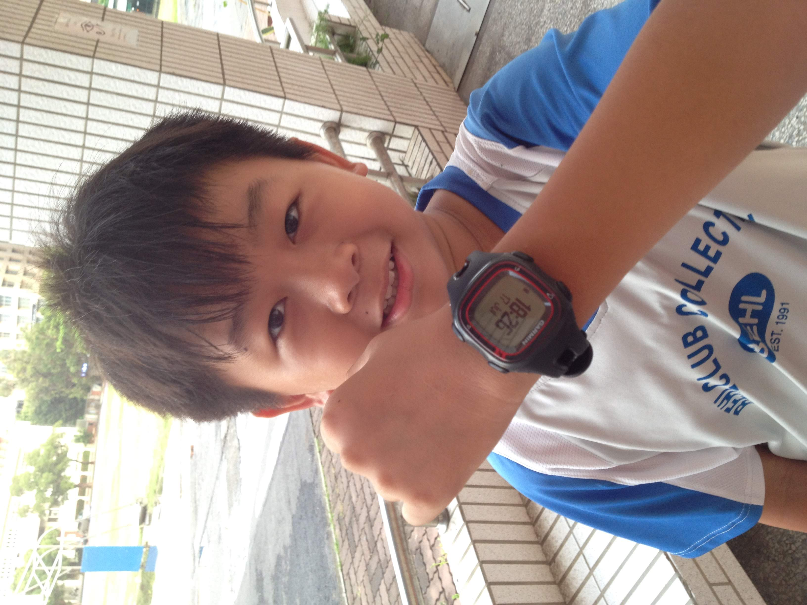

我是蔡秉宏，是海資二甲的學生，喜歡研究和3C有關的事物，包括但不限於：手機、電腦、擋廣告以及各種獵奇的東西。例如：把不能升macOS 10.14的iMac繞過限制，升上macOS 12；把不能升Win11的電腦繞過限制，升上Win11，在Windows 電腦上安裝黑蘋果和蘋果虛擬機，老實說我覺得我就是在浪費時間，但又有一點成就感，今年寒假，我打算要在Nintendo Switch 上裝Android，你問我為什麼，我只覺得能做到別人不能做的事很有趣，但其實一點都不實用。
我會在其他頁面上更詳細的說明上述的內容，也會推薦幾個酷東西，說不定某些工具您也早就在使用了。
平安
蔡秉宏 學生 敬上